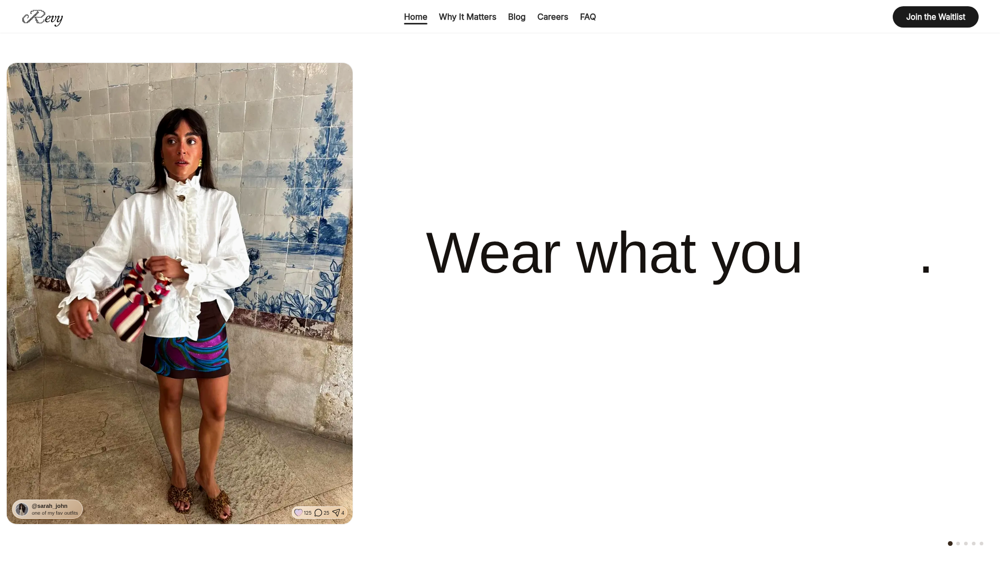
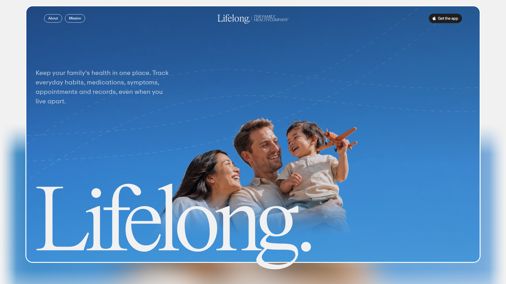
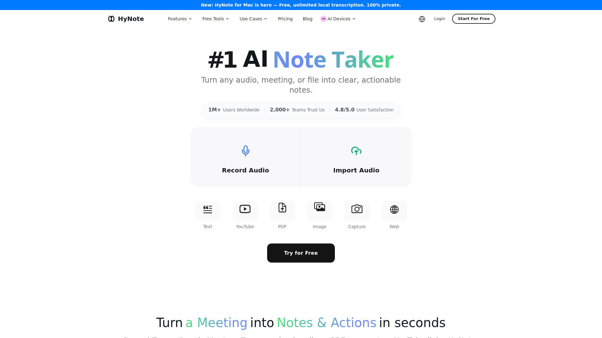
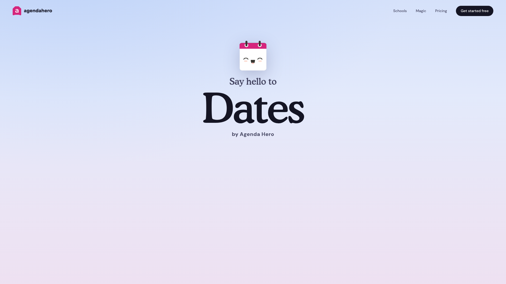
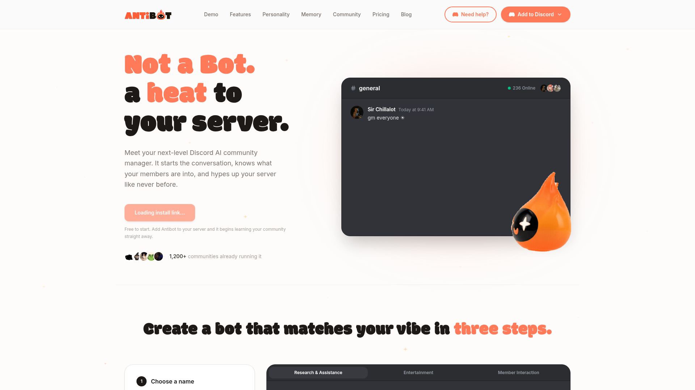

8月21日 周五

Revy — AI 时尚衣橱助手
把整个衣橱数字化：拍照自动抠图建档，AI 根据场合、天气与风格推荐穿搭，还能把心仪穿搭挂上联盟链接变现。倡导「穿已有的，买缺的」，减少冲动消费。

Lifelong — 全家健康档案管家
把全家人的健康记录、用药、症状、就诊与穿戴数据收进一个私密空间，每人一份独立健康档案，AI 助手 Alo 帮你串起整个家庭的健康脉络，异地也能共同照护。

HyNote for Mac — 本地私密 AI 笔记转录
Mac 上的系统级录音 + 实时转录 + AI 摘要笔记应用：录制任意 App 的会议音频，全程本地处理、隐私 100% 不外泄，无需机器人进会，自动生成结构化摘要与待办。

Dates by Agenda Hero — AI 日程魔法助手
把 PDF、图片、截图或一段文字丢进去，AI 自动解析出日期、时间、地点并一键写入日历；还能把一份日程同步发布为网页、可打印 PDF 和可订阅链接，改一次处处生效。

Antibot — 会主动热场的 AI 社区管家
Discord 上的 AI 社区运营官：记住每位成员的兴趣与梗，群冷场时主动发起话题；用大白话指挥它建投票、整理频道、做每日回顾，还能自定义名字与性格。